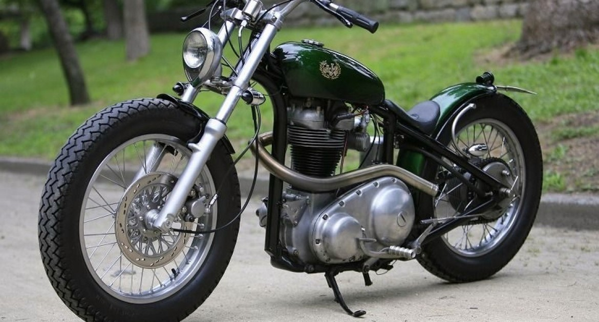

Como un desarrollo posterior a las bicicletas, con un motor de vapor y ruedas de madera, el estadounidense Sylvester Howard Roper inventó en 1867 la primera motocicleta del mundo. Su velocidad era de 18 km/h y el motor desarrollaba 0,5 caballos.
A lo largo del tiempo, este invento se fue perfeccionando y se deben resaltar tres año como los hitos principales:
-En 1902 se inventó el Scooter, moto que se popularizó y hoy en día sigue abarcando una gran parte del mercado.
-En 1910 apareció el sidecar, las motos con silla a un costado, famosas por recordar la historia.
-En 1945, después de volver de la Segunda Guerra Mundial, los soldados estadounidenses revolucionaron la historia de las motos con las famosas CUSTOM.
Sin embargo, en Colombia, para el año 1930 se considera la primera llegada de la moto Harley davidson a la ciudad de valledupar, en donde los ciudadanos quedaron fascinados con el motor que rugía por las calles y hacía vibrar a los habitantes.
Colombia es un país que se mueve en motocicleta. La RS 100 y la DT 125/175 se convirtieron en motos que siempre quedarán grabadas en la memoria de los colombianos, pues se vendieron a tal punto que hoy aún tienen un valor comercial para los aficionados de la consentida.
